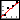
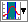
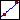
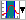
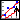

On ouvre la boite de modélisation par

ou le menu local (clic droit) du graphe. On le referme par le même bouton ou par le menu local de la modélisation “ fermer ”. Remarque : on peut laisser active la modélisation lorsque la boite est fermée en choisissant dans la boite de dialogue options graphique l'option "points et modèle". On peut aussi cliquer sur le bouton
qui remplira le mémo à votre place.Le choix du menu “ Mise à jour ” (raccourci F2 ou touche Entrée du pavé numérique) ou du bouton MàJ effectue la prise en compte du mémo.
Voir aussi modélisation graphique

qui permet le choix de modélisations prédéfinies. Ce bouton peut être éventuellement inactif.On entre les modélisations sous la forme y(x)=f(x) par exemple y(x)=a*x+b. Le texte sera pris en compte à la suite de deux frappes de la touche entrée (une première interprétée comme passage à la ligne, le deuxième comme une validation), on peut aussi utiliser F2 ou le bouton  . Les fonctions entrées sous la forme y(x):=f(x) trace la fonction sans faire d'ajustement. Exemple :
. Les fonctions entrées sous la forme y(x):=f(x) trace la fonction sans faire d'ajustement. Exemple :
y=A*(1-exp(-t/τ))
y:=A
y:=A*t/τ
déterminent A et τ à l'aide de la première fonction et trace l'asymptote et la dérivée à l'aide des deux autres. Voir le fichier d'exemple charge.rw3.
On peut définir plusieurs fonctions chacune ayant son propre intervalle de définition. Les bornes de ces intervalles apparaissent sous forme de croix ou de barres verticales. Il suffit pour cela d'entrer autant de fonctions que nécessaires (en les séparant par la touche Entrée) PUIS de définir les bornes par le bouton

: cela ouvre un menu dont les n premières lignes permettent de tracer, par glisser déplacer, un rectangle contenant les points à modéliser. L'item suivant permet d'ajouter un modèle dans l'autre sens : vous définissez les bornes d'un intervalle PUIS vous entrez la fonction dans la boite de dialogue qui s'ouvre alors. Attention cela peut être ambiguë si les coordonnées du graphe ne correspondent pas au modèle. L'item suivant est une remise à zéro (modélisation de l'ensemble des données). On peut ensuite déplacer les losanges de définition des bornes à la souris. Ces bornes sont tracées sous forme de losange pour le début et de carré pour la fin ou de barres verticales dans le cas où l'abscisse est la variable de contrôle de la modélisation. Remarque : dans l'état initial (modélisation sur l'ensemble des données), ces barres sont peu visibles car confondues avec les axes (on voit uniquement un triangle).Si vous définissez plusieurs modèles sur des intervalles distincts, le logiciel renvoie l'intersection des modélisations. Celle-ci est calculée par dichotomie dans la zone se trouvant entre les deux intervalles, zone dans laquelle on peut penser que chacun des deux modèles s'applique par extrapolation. Une intersection dans un des intervalles de définition serait par nature douteuse puisque l'une des modélisations est correcte et pas l'autre. S'il n'y a pas affichage de l'intersection, écartez un peu les zones des deux modèles.
On peut aussi exclure un point particulier en le sélectionnant par clic, puis en frappant la barre d'espace (fonctionnement en bascule), ce qui permet de détecter les points d'influence.
On peut entrer les valeurs des paramètres dans la grille en dessous, on sélectionne le paramètre en cliquant sur sa valeur dans le tableau. On visualise le résultat SI le graphe comporte les variables y et x et si la case “ tracé automatique ” est cochée. Les boutons permettent de modifier à la souris les paramètres : un clic sur les petites flèches de la barre fait varier le paramètre de 2 %, un clic sur les grandes multiplie ou divise par 2. Le bouton permet de changer de signe. On peut ajuster par le bouton “ Ajuster ”

. Le résultat s'affiche dans le mémo du dessous. On peut empêcher le calcul et le tracé automatique à chaque modification de la valeur d'un paramètre en décochant la case “ tracé automatique ”. Ceci peut être utile lors du réglage initial des paramètres pour empêcher des calculs inutiles ou éviter des erreurs de calcul. Dans ce cas, il faudra cocher cette case pour effectuer le calcul et tracer le modèle.Si le modèle est une équation différentielle d´ordre 2 un bouton “ y´ ” permet d'affecter à la valeur initiale de la dérivée sa valeur expérimentale.
L'option “ Échelle selon modélisation ” dans la boite d'options du graphe permet de régler la taille du graphe selon le modèle (activée par la modélisation graphique).
Résultats
Les valeurs des paramètres sont données sous la forme p±q. L'intervalle [p-q,p+q] correspond à un intervalle de confiance de Student à 95 %. La précision relative sur la fonction est le rapport entre la moyenne quadratique des écarts fonction théorique/expérimentale et la moyenne quadratique de la fonction expérimentale. Lorsque l'intervalle de confiance est plus grand ou de l'ordre de grandeur de la valeur du paramètre, le logiciel signale que ce paramètre n'est pas significatif en remplaçant la précision par un ?. De même, lorsque le logiciel trouve une précision relative trop importante, pour signaler que la fonction proposée est mal adaptée, le logiciel remplace la précision par un ?
Si les incertitudes sont actives, l'ajustement se fait selon la méthode de l'ellipse et on donne la valeur de c2/(N-p) avec N nombre de points et p nombre de paramètres. Pour le c2, les points de y(t) sont pondérés par l'inverse de racine de (Dy2+(dy/dt)2Dt2) si Dy et Dt sont les incertitudes données dans l'onglet correspondant. Pour que les incertitudes soient actives, il faut qu'elles soient définies pour toutes les grandeurs expérimentales (double clic sur l'en-tête du tableau de valeurs pour l'éditer) et que vous ayez coché la case "méthode du chi2" dans la boite de dialogue options obtenue à l'aide du menu local de la modélisation accessible par le clic droit.
 suivi du choix "sauver modèle" permet de sauvegarder les résultats de la modélisation dans une variable ; suivi du choix "sauver paramètres" permet de sauvegarder les paramètres de modélisation dans des paramètres figés (sinon ces paramètres sont supprimés lors d'une nouvelle modélisation). Ce même bouton permet le choix d'options et d'opérations diverses (affichage des résidus, titre du graphe, …)
suivi du choix "sauver modèle" permet de sauvegarder les résultats de la modélisation dans une variable ; suivi du choix "sauver paramètres" permet de sauvegarder les paramètres de modélisation dans des paramètres figés (sinon ces paramètres sont supprimés lors d'une nouvelle modélisation). Ce même bouton permet le choix d'options et d'opérations diverses (affichage des résidus, titre du graphe, …)
Quelques conseils pour la modélisation
En cas d'utilisation d´une fonction adimensionnée du type exp(-t/tau) le logiciel effectue en fait la recherche de 1/tau et renvoie tau de manière à assurer une convergence plus rapide.
La régression non linéaire est très sensible à l'initialisation en particulier si la fonction est rapidement variable (par exemple X^N avec N comme paramètre) ou si la fonction est périodique (vous risquez de tomber sur une harmonique).
Les équations différentielles conduisent à des temps de calcul importants et sont très sensibles à l'initialisation. Une recherche manuelle préalable est donc souvent nécessaire. La variable explicative est obligatoirement la première.
Si vous utilisez des fonctions avec des points singuliers, par exemple les formules approchées pour les dosages pHmètriques, les bornes des intervalles doivent être suffisamment loin de ces points singuliers, car la recherche des paramètres peut alors conduire à des erreurs. Vous pouvez aussi utiliser la fonction IF qui permet d'éviter ce genre d'erreur.
Si vous utilisez des fonctions définies par continuité en un point, la modélisation peut conduire à une erreur. Il faut donc supprimer ce point ou définir des intervalles l'excluant. Ex : sin(x)/x conduira à une erreur en x=0. Dans ce cas précis, la solution est d'utiliser sinc(x) qui est définie en x=0.
N'essayez pas de déterminer deux paramètres alors que votre courbe ne dépend que d'un seul : le rapport des deux. Exemple trivial : J.dW/dt=-Cf donc W=W0-Cf/J*t. On ne peut entrer un tel modèle : on peut déterminer la pente de la droite Cf/J mais pas séparément Cf et J. Autre exemple : résonance en courant d'un circuit RLC : I=U/abs(R+j*L*w+1/(j*C*w)), on ne peut déterminer U, R, L, C !
Lorsque votre courbe ressemble à une droite, il ne faut pas espérer trouver plus de deux paramètres. Ceci arrive généralement lors d'une étude sur un intervalle limité.
Si vous avez des fonctions sigmoïdes sans modèle physique, vous pouvez essayer :
y=a/(b+(c-b)*exp(-x/x1)). (x=0 y=a/c) (asymptote y=a/b) (milieu x=x1*ln(b)).
y=a*(1+b*exp(k*x))/(1+c*exp(k*x)). (x=0 y=a*(1+b)/(1+c)) (asymptote y=a*b/c).
Créé avec HelpNDoc Personal Edition: Créer de la documentation iPhone facilement